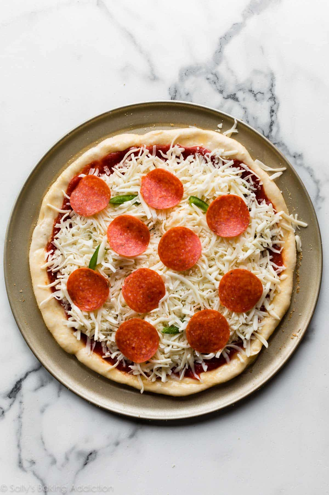

Home
Pizza

Pizza is a popular Italian dish made with a baked flatbread crust topped with tomato sauce, melted cheese, and a variety of
toppings such as meats, vegetables, and herbs. Its versatility and delicious flavors make it a favorite comfort food enjoyed worldwide.
Ingredients
For the dough:
- 2 ½ cups all-purpose flour
- 1 tsp salt
- 1 tsp sugar
- 1 packet (2 ¼ tsp) instant yeast
- 1 cup warm water
- 2 tbsp olive oil
For the sauce:
- 1 cup tomato sauce (or crushed tomatoes)
- 2 cloves garlic (minced)
- 1 tbsp olive oil
- 1 tsp dried oregano or Italian seasoning
- Salt and pepper to taste
For the toppings (customizable):
- 1 ½ cups mozzarella cheese (shredded)
- Pepperoni, ham, bacon, or cooked chicken
- Bell peppers, mushrooms, onions, olives, etc.
- Fresh basil (optional)
Instructions:
- Make the dough:
- In a bowl, mix warm water, sugar, and yeast. Let it sit for 5-10 minutes until foamy.
- Add flour, salt, and olive oil. Mix until a dough forms.
- Knead for about 6-8 minutes until smooth and elastic.
- Place in a greased bowl, cover, and let rise for 1-1.5 hours or until doubled in size.
- Prepare the sauce:
- Heat olive oil in a pan, sauté garlic until fragrant.
- Add tomato sauce, oregano, salt, and pepper. Simmer for 10 minutes.
- Assemble the pizza:
- Preheat oven to 220°C (425°F).
- Roll out the dough on a floured surface to your desired thickness.
- Transfer to a baking sheet or pizza stone.
- Spread sauce evenly, sprinkle cheese, then add toppings.
- Bake:
- Bake for 12-15 minutes, or until the crust is golden and cheese is bubbly.
- Serve: